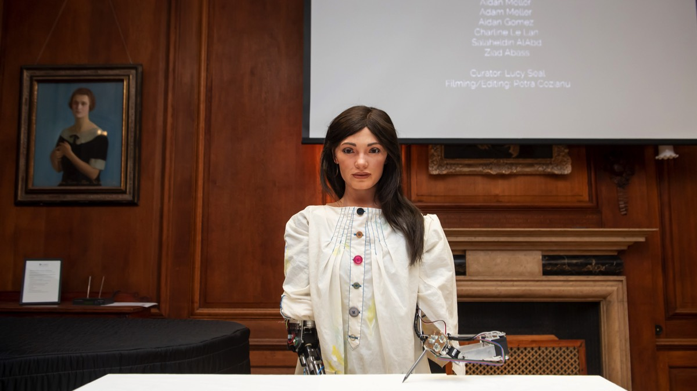
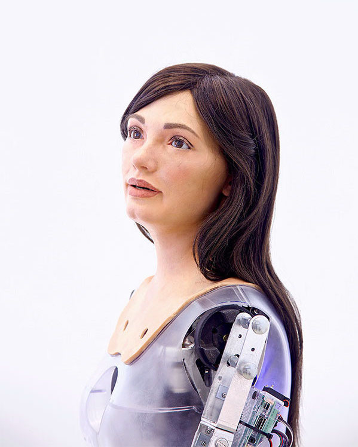
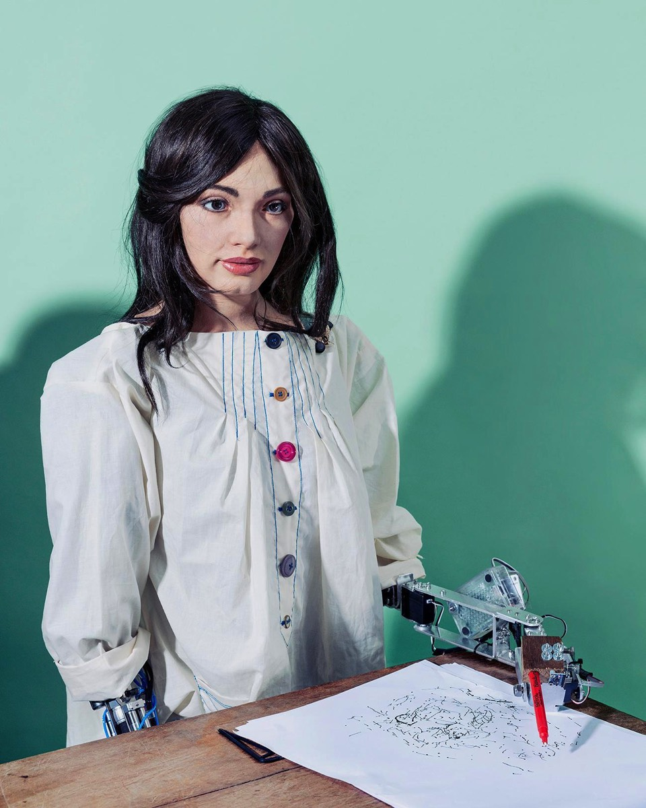

Meet Ai-Da, the world's first humanoid, ultra-realistic robot artist
The Project
This project revolutionises both the art and the technological worlds by fusing the two together and blurring the line between AI and art. The artwork created by Ai-Da is made to promote discussion about the technological revolution we are in as well as the possible futures of AI.
She is the brainchild of Oxford art gallery owner, Aidan Meller, who named her after Ada Lovelace, the world’s first computer scientist. Lovelace was a truly remarkable person who has had an incredible impact on the world we live in. The robot Ai-Da was named so in hopes to inspire more women to actively be part of science and technology, where they are under-represented.
She is the brainchild of Oxford art gallery owner, Aidan Meller, who named her after Ada Lovelace, the world’s first computer scientist. Lovelace was a truly remarkable person who has had an incredible impact on the world we live in. The robot Ai-Da was named so in hopes to inspire more women to actively be part of science and technology, where they are under-represented.

My Role
Salaheldin AlAbd and I designed Ai-Da’s drawing arm and developed the technology that allows her to create sketches of the person standing in front of her. We implemented smart algorithms that use computer vision to analyse whoever Ai-Da sees, then developed a control system that produces a path for her arm to follow, based on her interpretation.
The method involves turning pixel coordinates into real space coordinates. Her artificial drawing arm was also designed by us two. Through this arm, the drawing algorithm outputs become a physical reality - Ai-Da’s impressionist sketch.
We then worked alongside Engineered Arts (the Cornwall-based company that built the rest of Ai-Da's body) to integrate our drawing system with the body.
The method involves turning pixel coordinates into real space coordinates. Her artificial drawing arm was also designed by us two. Through this arm, the drawing algorithm outputs become a physical reality - Ai-Da’s impressionist sketch.
We then worked alongside Engineered Arts (the Cornwall-based company that built the rest of Ai-Da's body) to integrate our drawing system with the body.


Here is part of an interview I had when Ai-Da was exhibiting at Tate Modern, London.
Ai-Da’s drawings are fragmented to reflect concerns over the potential for depersonalisation in the future as we use new technologies more and more in our daily lives. The technologies are tools, and therefore are open for both positive and negative use by humans. Ai-Da’s drawings are heavily influenced by creative arts in the first half of the twentieth century, including artists Pablo Picasso, Käthe Kollwitz and Max Beckmann, and writers Aldous Huxley and George Orwell. Ai-Da’s work is continuing on in this style, and is therefore deliberately not representational, but instead is abstracted, unsettling and splintered in style.
Press Coverage
We had the honor of being part of the creation of a robot that is the first of its kind. People and news agencies around the world were thrilled to find out about Ai-Da who fuses art with technology and AI. In one week alone after Ai-Da’s debut, she was in nearly 900 publications/newspapers/magazines/websites.
She has also had television appearances on Good Morning Britain with Piers Morgan and The One Show alongside Killing Eve star Fiona Shaw. In addition to the exceptional press coverage, Ai-Da also exhibited and performed at The Barbican as well as at Ars Electronica (Austria).
Here are the links to some of her appearances:
She has also had television appearances on Good Morning Britain with Piers Morgan and The One Show alongside Killing Eve star Fiona Shaw. In addition to the exceptional press coverage, Ai-Da also exhibited and performed at The Barbican as well as at Ars Electronica (Austria).
Here are the links to some of her appearances: